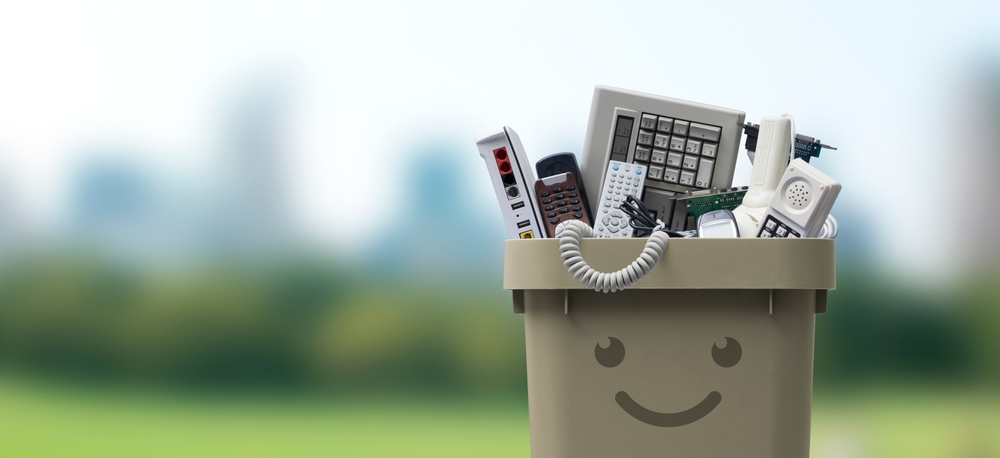
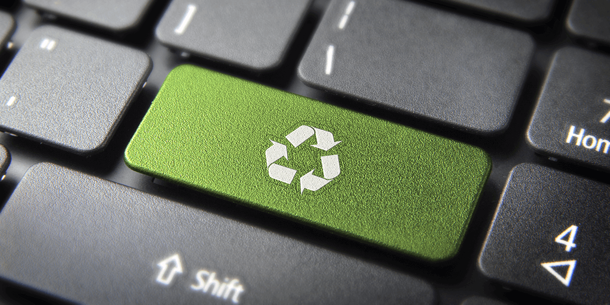
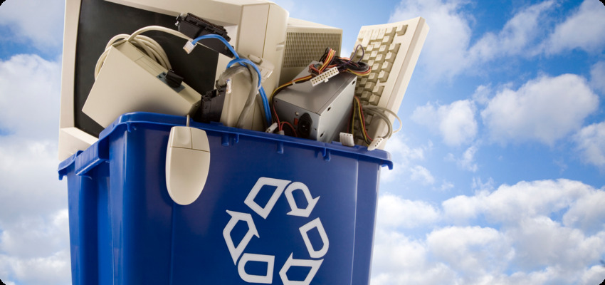
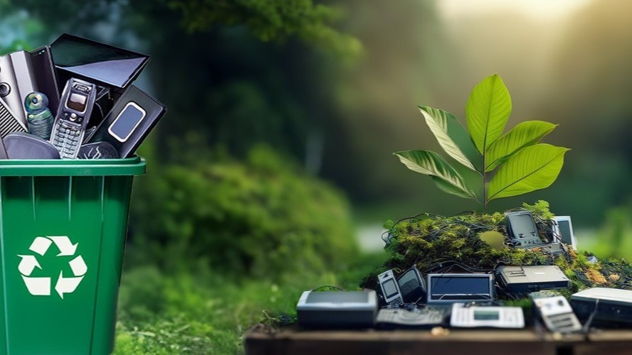

Waste Wise

What is Waste Wise?
.jpeg)
- When we reduce waste, we use fewer materials and avoid creating unnecessary garbage.
- Reusing items means giving them a second life instead of throwing them away, which helps save natural resources.
- Recycling involves turning old products into new ones, which uses less energy and reduces pollution compared to making things from raw materials.
- Being Waste Wise also means thinking carefully about what we buy and how we dispose of things.
- By following these practices, we can:
- Lower greenhouse gas emissions
- Keep our surroundings cleaner
- Save money
- Build a more sustainable future for our planet

Reusing Everyday Items
- Reusing Everyday Items is a simple but powerful way to reduce waste and protect the environment.
- Instead of throwing things away after one use, we can find new purposes for them.
- For example, glass jars can be used to store food or organize small items.
- Old clothes can be turned into cleaning rags or craft projects.
- Reusing helps conserve natural resources, reduce pollution, and save energy because it cuts down the need to produce new items.
- It also saves money and encourages creative thinking.
- By reusing everyday items, we take an important step toward living a more eco-friendly and sustainable lifestyle.

Being Waste Wise means making smart choices every day to reduce the amount of garbage we create.
One effective way to do this is by reusing everyday items.
Instead of throwing things away after one use, we can:
Reusing helps conserve natural resources and reduce the energy used in manufacturing.
It also cuts down pollution from producing and transporting new goods.
By reusing, we send less waste to landfills, keeping our environment cleaner and safer.
- Turn old clothes into cleaning cloths.
- Use glass jars for storage.
- Use scrap paper for notes or crafts.

Being Waste Wise helps reduce the amount of waste that ends up in landfills, rivers, and oceans.
It lowers pollution, protects wildlife, and fights climate change.
We save natural resources like water, trees, and minerals by reusing and recycling instead of producing new items.
Using recycled materials takes less energy and creates fewer harmful emissions.
It helps us save money and encourages responsible habits.
Most importantly, it supports a sustainable future for ourselves and future generations.
Why Waste Wise Matters
